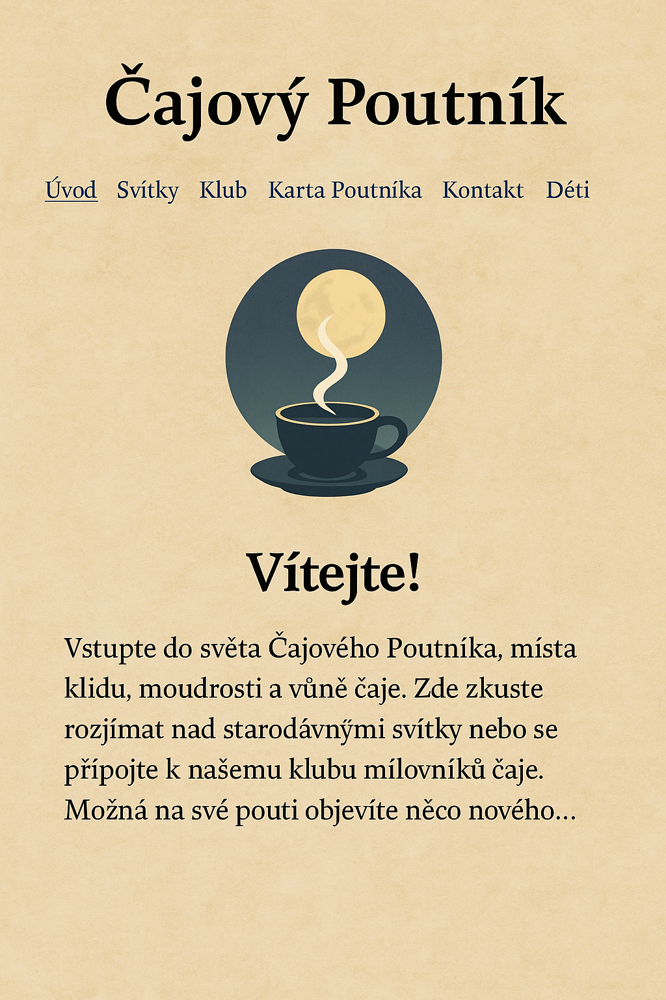

Klub lunárních poutníků
Pod lunou, mezi šálky čaje, vznikl tichý kruh přátel.
Šálek čaje pod Lunou

Chceš si popovídat s naším digitálním tygříkem,
položit otázku v tichu nebo se jen nechat vést haiku?
Pod lunou, mezi šálky čaje, vznikl tichý kruh přátel.
Chceš si popovídat s naším digitálním tygříkem,
položit otázku v tichu nebo se jen nechat vést haiku?